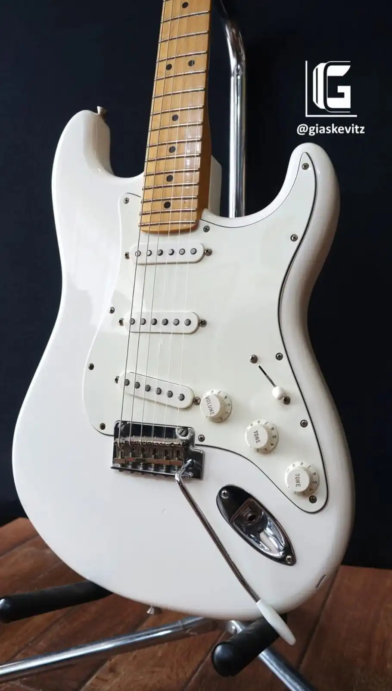
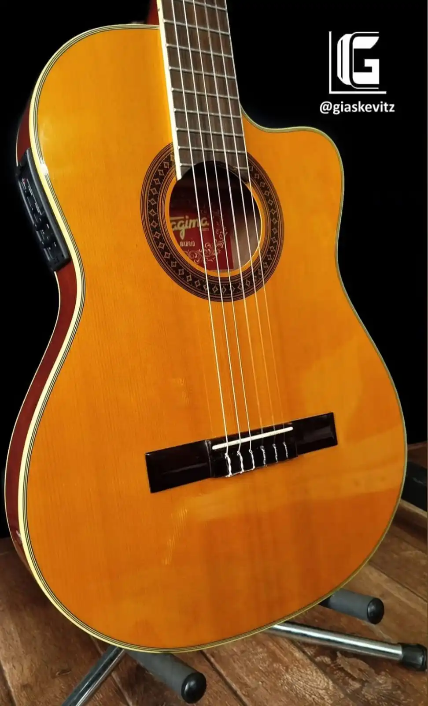
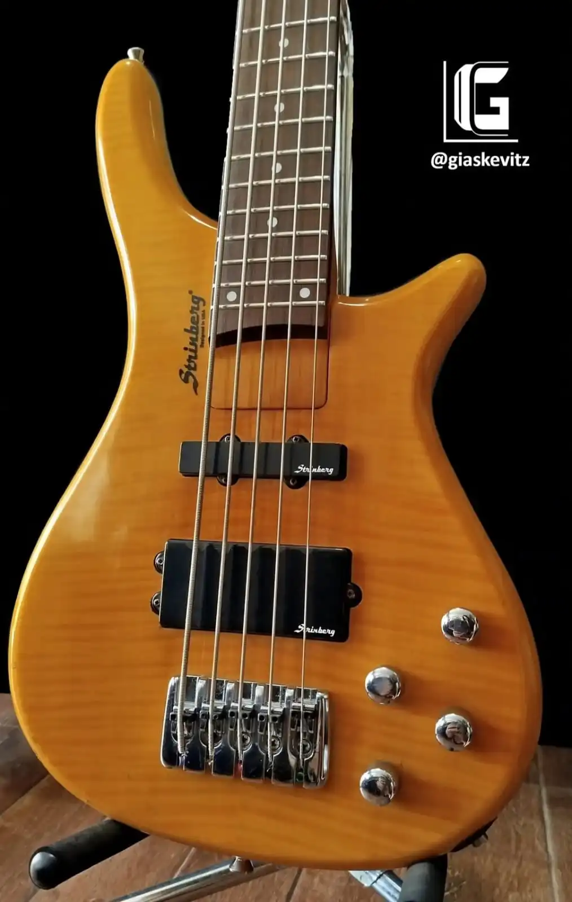
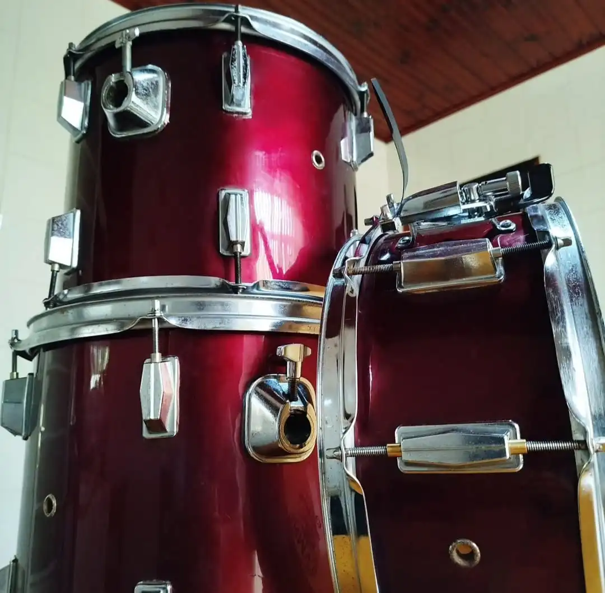
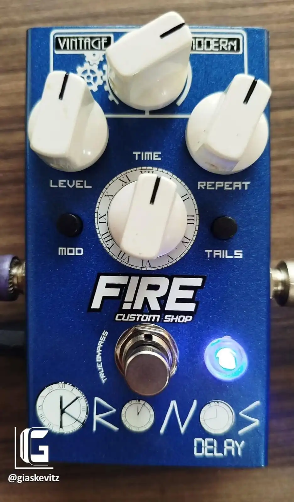
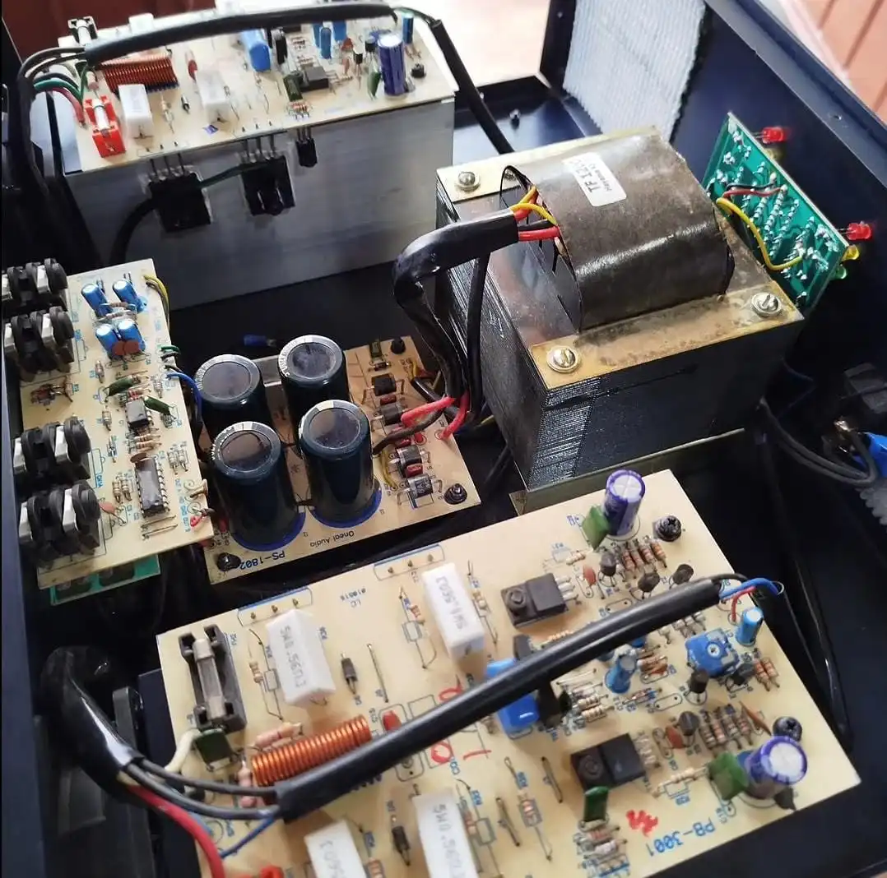

Ajustes & Regulagem
Regulagem de oitavas, altura de cordas, ajuste de tensor e nivelamento para garantir a melhor tocabilidade e afinação.
Ajustes, limpezas, restauração de instrumentos, manutenção eletrônica em amplificadores e pedais, além de aulas particulares de música.
Serviços especializados para guitarras, violões, baixos, baterias e equipamentos de som. Cada peça passa por uma avaliação individual antes de qualquer intervenção.
Regulagem de oitavas, altura de cordas, ajuste de tensor e nivelamento para garantir a melhor tocabilidade e afinação.
Higienização profunda de escalas, hidratação de madeiras, polimento de trastes e limpeza técnica de ferragens.
Reparo de trincas, colagens, refrete e recuperação de acabamentos, preservando a originalidade do instrumento.
Ajustes, restauração, substituição de peles, afinação e manutenção técnica em ferragens e componentes de bateria.
Diagnóstico de ruídos, soldas, revisão e reparo de circuitos em amplificadores, pedais de efeito, potenciômetros e chaves seletoras.
Aprenda a tocar com quem entende do instrumento tanto na prática quanto na estrutura mecânica. Aulas dinâmicas, focadas no seu objetivo e estilo musical.
Técnica, acordes, rítmica, improvisação e repertório voltado para o gosto musical do aluno.
Groove, harmonia, percepção rítmica e o papel fundamental do baixo na construção do som.
Leitura, cifragem, harmonia aplicada e treinamento de ouvido para entender a música por dentro.
Confira alguns trabalhos de manutenção e restauração realizados no ateliê.






Fale diretamente comigo para agendar uma avaliação do seu instrumento ou saber mais sobre os horários disponíveis para aulas.